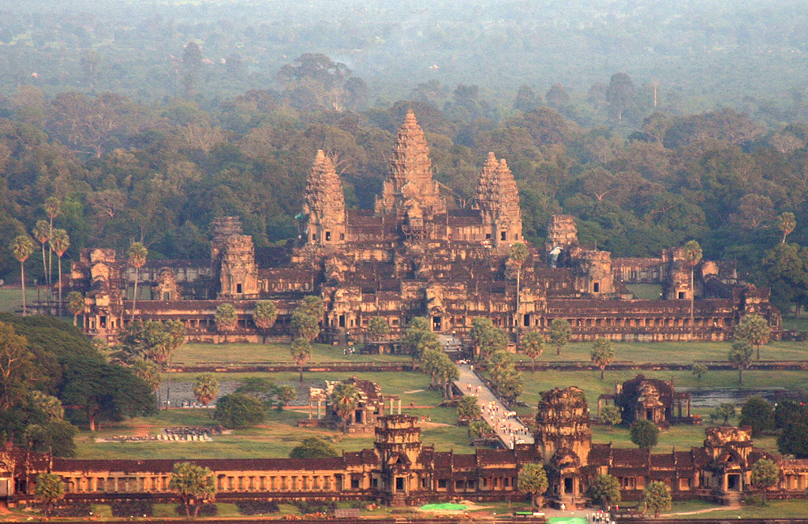

Angkor Wat is one of the largest monuments in the world. Angkor Wat was built in the early 12th century by King Suryavarman II of the Khmer Empire. In 1992, Angkor Wat temple became a UNESCO World Heritage Site. It took 40 years to built and archeologists believe that this temple have not competed yet because there are some stone that have not fully carved.
It is located in Siem Reap Province, Cambodia. Every year, millions of tourists visit Angkor Wat and thay usually come back for the second time. It is more than just a tourist destination, but it is the place of rich culture and history. There are five towers of Angkor Wat temple with beautiful Khmer patterns. Moreover, we will see thousand of Apsaras on the wall of this temple.